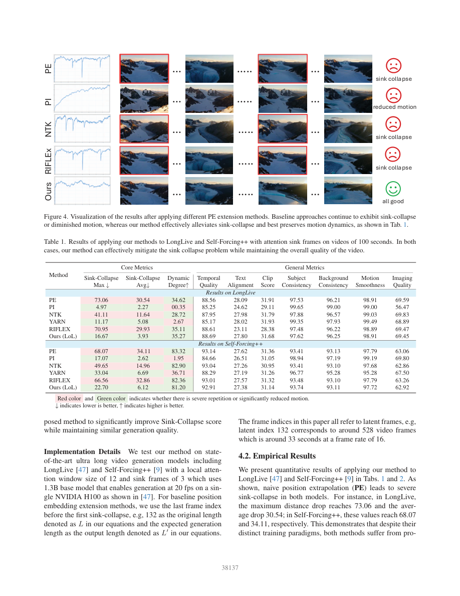
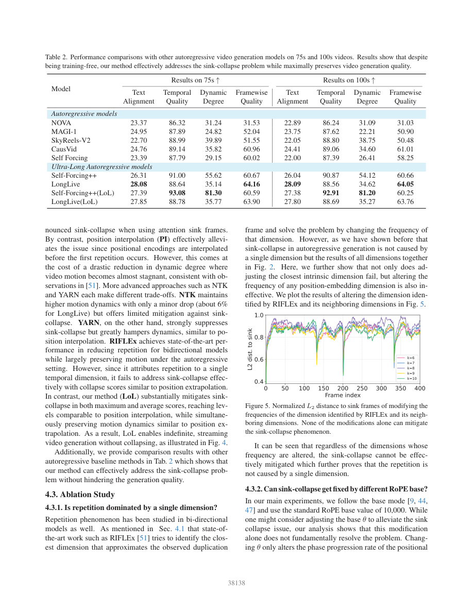

一句话结论
LoL用多头旋转位置编码扰动（multi-head RoPE jitter）降低指定流式视频模型对初始汇聚帧的突然回退，同时保留较高动态；75/100秒定量结果、12小时演示和长期语义记忆必须分别看待。
问题定义
LongLive和Self-Forcing++保留初始注意力汇聚帧（attention sink frames）的KV，提升局部自回归生成的稳定性，却会在特定latent位置重新生成初始内容。论文称之为汇聚帧塌缩（sink-collapse），与一般模糊、曝光漂移、身份遗忘或事件断裂不是同一个失效维度（§3.2，图2/3）。
方法概述
- 定位失效：对sink的归一化L2距离骤降，伴随多时间频率相位集中及多个attention heads同时关注sink；不同prompt在类似位置回退。
- 错开各头：算法1让每头的RoPE base围绕10000独立扰动，θ_h=θ_0(1+σε_h)，ε_h取均匀分布；σ=0.8为经验折中。不额外训练。
- 流式延伸：动态生成RoPE和噪声，保留局部注意力，因果VAE滑窗解码，绕开原实现1024 latent位置及整段解码限制（§3.4）。这是一种运行机制，不是无限质量保证。
设置为1.3B底座、local window 12、sink 3，chunk 3；正文指latent帧，不能理解为只有三个空间token。算法未提供可运行缓存实现，扰动采样与KV一致性仍待代码复核。
关键发现
重复与动态必须联合验收
128条MovieGen提示、VBench式指标；表1为100秒，以下为论文原值。Sink-Collapse Max/Avg衡量L2距离下降，不是失败率百分比。
| 方法 | Collapse Max↓ | Collapse Avg↓ | Dynamic↑ | Temporal | Text |
|---|---|---|---|---|---|
| LongLive PE | 73.06 | 30.54 | 34.62 | 88.56 | 28.09 |
| LongLive LoL | 16.67 | 3.93 | 35.27 | 88.69 | 27.80 |
| LongLive PI | 4.97 | 2.27 | 0.35 | 85.25 | 24.62 |
| Self-Forcing++ PE | 68.07 | 34.11 | 83.32 | 93.14 | 27.62 |
| Self-Forcing++ LoL | 22.70 | 6.12 | 81.20 | 92.91 | 27.38 |
| Self-Forcing++ PI | 17.07 | 2.62 | 1.95 | 84.66 | 26.51 |
PI虽有更低collapse代理值，但动态接近静止；LoL更值得关注的是取舍，而不是单指标最佳。Self-Forcing++的动态、文本及时间质量均有小幅数值下降，不能写全面无损；论文未给主表显著性。

表间基线不能直接合并
表2在75/100秒对比多种自回归模型，但100秒Self-Forcing++的Dynamic为54.12，表1PE为83.32；Temporal分别90.87与93.14，Text分别26.04与27.62。LoL对应三项则一致为81.20、92.91、27.38。两种基线设置的差异未充分解释，不能把表2提升直接当作与表1同设置的纯jitter收益，也不能自行判为印刷错误。
表2的Framewise Quality与表1Imaging Quality不是同一列。Self-Forcing++在100秒Framewise为60.66→60.25；LongLive为64.05→63.76，不支持所有质量均提高。

消融支持特定机制，但不是普遍定理
图5单频及邻近频率修正未消除回退；图6统一改base主要移动回退位置；图7扰动太小不足、太大损害运动/质量；图8扰动更多头更有效，并对头比例试验给三随机种子标准差。只有后者明确三种子，不应把其不确定性报告推广至全部实验。
局限或疑问
- 时长不等于记忆：主表是75/100秒，尚未越过论文所述原实现约4分15秒的位置上限；图1和补充ZIP给12小时快放演示，不含小时级多提示多种子质量曲线或身份/事件记忆测试。§6明确长期记忆仍难。
- 指标不等于语义失败：sink-L2骤降不区分不合理复制与合理回访，缺完整可执行的归一化/下降窗口定义；不能换算崩溃概率。静态高一致性亦可掩盖低动态。
- 比较并非完全同预算：两种主要底座共享Wan系先验；表2异构模型不构成架构因果实验。位置插值基线L取首次回退前的index（例132），需公开并固定该选择。
- 统计单位：128提示而非所有帧独立；没有主表完整种子、聚类CI、独立人评协议或底座数据重叠审计。不能由已有VBench人类对齐推断本论文做了新盲评。
- 成本：单H100约20生成fps是实现段引用LongLive的吞吐，视频时长按16播放fps解释；没有LoL端到端P50/P95、峰值显存与VAE/写盘账本。训练免费不包含底座训练，固定窗口也不意味着输出总成本常数。
- 实现未交付：2026-09-16核验作者仓库commit
245c8440665f4b109d2c138839df8edfb68856f2，完整tree只有README与GIF，无LoL推理/评测代码。官方ZIP是视频示例，无补充PDF或脚本；本轮只核验目录/CRC，未完整观看小时级内容。
最有决策价值的下一步：固定原模型/PE/LoL设置，在100秒、超过1024 latent位置及小时级多长度上联合测首次回退、动态、身份重现、事件顺序与成本，按prompt聚类报告不确定性，并加入合法回访负对照。
原始链接
相关页面
- topics/video-generation：流式执行、无回退与长期记忆三层验收。
- sources/2026-04-12-streamingt2v：长短期记忆的邻近路线，不构成本论文同条件对照。
备注
完整独立审计和页码定位保存在raw条目analysis.md。源文件与提取文本均保留；本文解释不替代原始证据，未将预印本参考文献自动纳入正式语料。